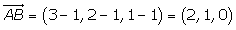
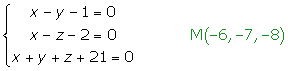

Ejercicios de problemas métricos
1Hallar el área del triángulo cuyos vértices son los puntos A(1, 1, 1), B(3, 2, 1) y C(−1, 3, 2).
2Hallar el volumen del tetraedro cuyos vértices son los puntos A(0,0,0), B(2, 1, 3), C(−1, 3, 1) y D(4, 2, 1).
3Dada la recta y el plano  , hallar la ecuación de la recta s, proyección ortogonal de r sobre π.
, hallar la ecuación de la recta s, proyección ortogonal de r sobre π.
4Calcular la distancia entre las rectas: .
5Hallar el simétrico del punto A(3, 2, 1) respecto del plano  .
.
6Calcular el área del triángulo cuyos vértices son los puntos de intersección del plano  con los ejes coordenados.
con los ejes coordenados.
7Dado el plano de ecuación  y el punto A(1, 1, 1), hallar las coordenadas del pie de la perpendicular trazada desde A a ese plano (o sea, la proyección ortogonal de A sobre él).
y el punto A(1, 1, 1), hallar las coordenadas del pie de la perpendicular trazada desde A a ese plano (o sea, la proyección ortogonal de A sobre él).
8Determinar la ecuación del plano π que está a u de distancia del origen y es paralelo a aquel que tiene por ecuación  .
.
9Hallar la distancia entre el punto A(3, 2, 7) y la recta del primer octante.
10Sabiendo que los lados de un cuadrado están en las rectas:  , calcular su área.
, calcular su área.
- 1
- 2
- 3
- 4
- 5
- 6
- 7
- 8
- 9
- 10
Ejercicio 1 resuelto
Hallar el área del triángulo cuyos vértices son los puntos A(1, 1, 1), B(3, 2, 1) y C(−1, 3, 2).



Ejercicio 2 resuelto
Hallar el volumen del tetraedro cuyos vértices son los puntos A(0,0,0), B(2, 1, 3), C(−1, 3, 1) y D(4, 2, 1).


Ejercicio 3 resuelto
Dada la recta y el plano  , hallar la ecuación de la recta s, proyección ortogonal de r sobre π.
, hallar la ecuación de la recta s, proyección ortogonal de r sobre π.
La recta s es la intersección del plano π con el plano πp que contiene a la recta r y es perpendicular a π.
El plano πp queda determinado por el punto A(1, −1, 0), el vector (2, 1, 1) y el vector normal, (1, 1, 1), del plano perpendicular π.


Ejercicio 4 resuelto
Calcular la distancia entre las rectas:


Ejercicio 5 resuelto
Hallar el simétrico del punto A(3, 2, 1) respecto del plano  .
.
En primer lugar calculamos r, que es la recta que pasa por A y es perpendicular a π.
Hallamos el punto de intersección de la recta r y el plano π.

Teniendo en cuenta las coordenadas del punto medio de un segmento, podemos hallar el extremo A'.

Ejercicio 6 resuelto
Calcular el área del triángulo cuyos vértices son los puntos de intersección del plano  con los ejes coordenados.
con los ejes coordenados.


Ejercicio 7 resuelto
Dado el plano de ecuación  y el punto A(1, 1, 1), hallar las coordenadas del pie de la perpendicular trazada desde A a ese plano (o sea, la proyección ortogonal de A sobre él).
y el punto A(1, 1, 1), hallar las coordenadas del pie de la perpendicular trazada desde A a ese plano (o sea, la proyección ortogonal de A sobre él).


El pie de la perpendicular es el punto de intersección entre el plano y la recta.


Ejercicio 8 resuelto
Determinar la ecuación del plano π que está a de distancia del origen y es paralelo a aquel que tiene por ecuación  .
.

Ejercicio 9 resuelto
Hallar la distancia entre el punto A(3, 2, 7) y la recta del primer octante.


Ejercicio 10 resuelto
Sabiendo que los lados de un cuadrado están en las rectas:

calcular su área.
Determinación lineal de la recta r.

Determinación lineal de la recta s.


La distancia de la r a la recta s es igual a la distancia del punto B a la recta r.


El lado del cuadrado es igual a la distancia entre las rectas r y s.